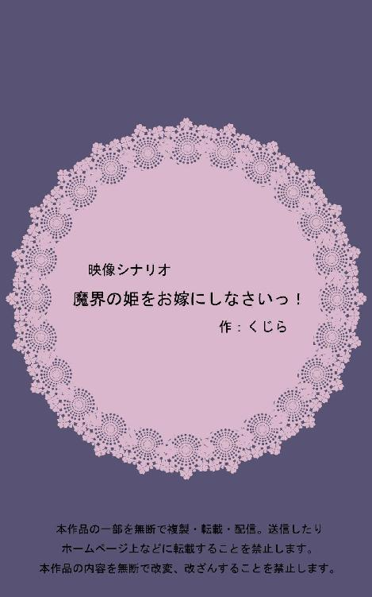

| 魔界の姫をお嫁にしなさいっ！（映像シナリオ） | |
| くじら | |
| (2018) | |

魔王城・外観（夜）
Ｔ「魔王城」
空に三日月。おどろおどろしい外観。崖の上に建っている。
月の真下、城の中央、吹き抜けになった渡り廊下に、二人分の人影。
魔王城・渡り廊下
モノクルをかけた執事服のアスター(16)へ、ネグリジェ姿のリコリス(11)が突進する。
アスター、リコリスに押し倒される。
アスター「どど、どうなさいましたか!?」
リコリス「どうしよう！ お父様、殺しちゃった！」
アスター、ホッとして、
アスター「ご冗談を（笑）」
リコリス「いいから来なさい！」
アスター「魔王様は地下に封印された破魔の剣でないと倒せませんよ」
起き上がるリコリス、アスターの手を引く。
同・リコリスの部屋
女の子らしい部屋。ベッドにクマのぬいぐるみ。
地面に転がる破魔の剣。ニゲラの衣装、カーペットに灰。
アスター、灰の前にへたり込む。
アスター「なぜこのようなことを......！」
リコリス「だって、お父様が無理やり西の貴族と婚約させようとするんだもの」
アスター「なかなか申し分のない方だと思いましたが......」
リコリス「これ見て」
リコリス、アスターに釣書を見せる。ガチムチの青年の写真。
アスター「魔王の威厳があるかと存じます」
リコリス「好みじゃないの！」
リコリス、釣書を投げる。
回想・リコリスの部屋
ニゲラ(40)の顔に釣書がぶつかる。
ニゲラ「なぜだ。性格もよかったろう」
リコリス「ガチムチはイヤ！」
ニゲラ「戴冠式まで一年しかないんだ。このままだとリコリスが魔王を継がなくてはならないぞ。わがままを言わないでおくれ」
リコリス「イヤよ。魔王はイヤ！」
ニゲラ「なんとかここで手を打ってくれないか」
リコリス「どっちもイヤ！」
リコリス、破魔の剣を構える。
ニゲラ「わかったから剣を下げておくれ。ほら、じゃあ、こっちはどうだ」
ニゲラ、リコリスに新しい釣書を見せる。ガチムチの青年の写真。
リコリス「なんにもわかってないじゃない!!」
リコリス、破魔の剣を振るう。
ニゲラの悲鳴。
魔王城・リコリスの部屋
アスター、破魔の剣を拾う。
アスター「剣まで用意して、殺す気満々じゃないですか......」
リコリス「脅すだけのつもりだったの。お父様が悪いのよ！ あ、それ返しておいてね」
リコリス、ベッドにぴょんと座る。
アスター、灰へ両手を合わせる。
アスター「あぁ、魔王様、なんとおいたわしい姿に......このアスター、拾っていただいたご恩は必ずお返しいたします」
アスター、啜り泣きながら甲子園の砂のように袋へ灰を詰める。
リコリス「ねえアスター、なんとかしてよ！」
アスター、リコリスの前へ跪く。
アスター「リコリス様が魔王になるのです」
リコリス「イヤよ！」
アスター「リコリス様以上に魔王の器の方はいらっしゃいません。魔王の娘が父親を殺し即位する。魔王に相応しい堂々とした前科かと」
リコリス「イヤなの！」
リコリス、くまのぬいぐるみでアスターの横っ面を殴る。
リコリス「あのね！ 女の子が魔王に即位すると冠の力でガチムチになっちゃうのよ！ そんなの絶対にイヤっ！」
アスター「そうは申しますが、相手がいない以上......こちらは丁重にお返ししておきましょう」
アスター、床の釣書を拾う。
リコリス、ポンと手を叩く。
リコリス「そうだわ！ アスターが殺したことにすればいいのよ。下剋上よ！」
アスター「俺が？ 魔王様を裏切ったことになるじゃないですか！」
リコリス、胸に手を当てて。
リコリス「なに言っているの。私が幸せになることが、この国の幸せよ。アスターもそうでしょ？」
アスター「むっ......そ、それはそうなのですが......」
胸の前で両手を組む笑顔のリコリス。
リコリス「じゃあ私の罪を被りなさい。お父様の代わりに魔王になって、戴冠式までに私の旦那様を見つけてきて」
アスター「そんな無茶な！」
リコリス「やって！」
アスター「荒事ならまだしも、相手探しは専門外です！」
リコリス「命令よ！ やりなさい！ やれー！」
リコリス、アスターのことをぬいぐるみで滅多打ちにする。
アスター「か、畏まりました」
アスター、胸に手を当てて一礼。モノクルがずれている。
リコリス「まずは四天王を倒して。それから貴族に宣告して、反対する連中は斬り捨てて」
アスター「それは単なる大量虐殺になってしまうのでは......？」
リコリス「あら。私の邪魔をするほうが悪いのよ。アスターならこれくらいできるでしょう？」
引きつるアスターの顔。微笑むリコリス。
同・会議室（昼）
玉座がある丸い机。玉座を中央にして、ポポー(44)ソテツ(38)オギ(80)獣人・シバ(32)が座っている。玉座の横に控えるアスター。
オギ「魔王様の御用は何だ。資料も用意されておらんのかね」
ソテツ「四天王の我々を呼び出したのだ。紙にも残せない重大な内容であろうぞ」
シバ「いよいよ人間界への侵略計画か」
ポポー「いやいや、わがまま姫の相手探しだろう。私どもの一族にもいい若いのがおるでな」
ポポー、机の上に釣書を出す。
オギ、ソテツも釣書を出す。
オギ「抜け駆けは許せませんな」
ソテツ「まったくである」
シバ「四天王とは言え、貴殿らの血族を魔王にはしたくないな......」
呆れ顔のシバ。
アスター「このたびはお集まりいただき恐縮です。実は、私から折り入ってご相談が」
アスター、胸に手を当てて頭を下げる。
アスター「私が魔王というのは、いかがでしょうか」
オギ、釣書を投げる。釣書はアスターの顔の横を抜け、壁へと刺さる。
オギ「（笑）ナマを言うではない、若造よ」
ソテツ「これだから言わぬことではない。やはり身元がどこぞとわからない者を側近へ置くべきではなかったのだよ」
ソテツ、机を蹴ってアスターへ斬りかかる。
アスター、素手で剣をいなし、ソテツの延髄を切る。昏倒するソテツから剣を奪う。
ポポー「魔王様の温情を仇で返すつもりか、このみなしごが！」
高く飛び上がるポポーの投げナイフ。
アスター、ナイフを剣で一つずつ落とす。ポポーが着地しようとしていた机を蹴り飛ばす。着地のバランスを崩したポポーを峰打ちする。ポポー、昏倒。
アスター、オギへ剣を向ける。
アスター「ご老体へ鞭を打つことはしたくない。降参召されよ」
オギ、アスターの後ろへぴたりとくっついているシバへ視線を向ける。
慌てて振り返るアスター。
オギ「やれ、シバよ」
シバ「甘いな、坊主。そんなんじゃ魔王になれねえ」
アスターが壁を背に飛びのくのと同時、シバはオギの襟首を掴む。
オギ「何をしている、シバ！」
シバ「だが下剋上とはおもしれぇ。魔族はこうでないとな。古臭いジジイは左遷だ」
オギ「後で後悔するぞ！」
シバ、オギを部屋の外へ締め出す。
訳知り顔でアスターの目を覗きこむシバ。ニヤリと笑い、
シバ「あんたは他のやつと目が違う」
アスター「ありがとうございます、シバ様」
アスター、頭を下げる。
シバはアスターの肩をバシバシ叩き、大口を開けて笑う。
シバ「魔王が頭なんか下げんじゃねえ！ 堂々としろよ（笑）」
アスターMO「やらかしたのは俺じゃない、姫だ......」
アスター、愛想笑いを浮かべる。
魔王城・謁見の間（昼）
正装に身を包んだアスター、破魔の剣を腰に差している。横にはシバが控えている。
オギ、ソテツ、ポポーが縄で縛られ、口を封じられている。
ずらりと並ぶ魔族達。
アスター「魔王軍四天王は倒した。姫は部屋に閉じ込めた」
マントを翻すアスター。剣を抜き、構える。
アスター「今日から私が王だ！ 文句のあるやつは力尽くで来い！」
魔族Ａ「下剋上チャンスだ！」
魔族Ｂ「今の内に首を刈れ！」
魔族Ｃ「かかれかかれー！」
武器を取り、向かってくる魔族達。
アスター、切りかかる魔族Ａを鋭く睨みつけ、
アスター「顔がイマイチ」
アスター、小声で呟いて、魔族Ａを切り捨てる。
アスターに二人掛かりで斬りかかる魔族Ｂと魔族Ｃ。
アスター「身長が低い。歳が離れている。セコい」
アスター、小声で呟いて、魔族Ｂと魔族Ｃを同時に切り捨てる。
アスター「どこかにいい男はいないのか！ 私はここにいるぞ、かかってこい！」
シバ、向かってくる魔族をナックルで殴り飛ばし、笑う。
シバ「そうだな。早く見つけて格式で埃臭い四天王を一新したいぜ」
アスターMO「申し訳ないが、これは婿探しだ......ダメだ。全員モブ顔に見える」
魔族達を見渡すアスター、眉間に皺を寄せる。
同・リコリスの部屋（夜）
リコリス、優雅にお茶を飲んでいる。向かいの席にはぬいぐるみ。
リコリス「ご苦労様。なかなかちゃんと魔王してるじゃない。それでいい人はいた？」
部屋の隅で頭を抱えて泣くアスター。魔王の衣装のまま。
アスター「俺はなんて恐ろしいことを......お許しください魔王様......」
リコリス「やっちゃったものは仕方ないでしょう？ それより早く報告しなさいよ」
リコリス、おいしそうにサクサクとマカロンを食べる。
アスター、袖で涙を拭い、立ち上がる。
リコリスの横へ執事然と佇む。
アスター「本日は残念ながら外見と腕っ節の両方を兼ね備えた男は見つかりませんでした。誠に申し訳ございません」
頭を下げるアスター。
リコリス、ため息をつく。口の端にマカロンの欠片。
リコリス「仕方ないわ。私だって姫だもの。貧乏は目を瞑りましょう。貴族じゃなくていいわ」
リコリス、アスターへ微笑みかける。
リコリス「早くしなさいね？」
アスター「はい......お口についております」
リコリス「あら。拭いて」
暗い顔のアスター、胸ポケットからハンカチを取り出してリコリスの口元を拭う。
回想・魔界教会・中（夜）
教会風の建物。
ステンドグラス。蝋燭が一つ灯る薄暗い室内。祭壇を前にして並ぶ長イス。
最前列の端席で祈るアスター(5)の隣へ、ニゲラ(29)が座る。
ニゲラ「こんな時間に熱心だな」
暗い顔のアスター、手を膝へ下ろす。
アスター「両親が死にました。どうしたらいいのかと神に尋ねていました」
ニゲラ「そうか......辛かったな」
アスター、答えずに目を閉じて祈る。
ニゲラ「一緒に来るか？」
アスター「いいんですか」
ニゲラ「ああ。娘が産まれたんだ。よかったら兄代わりになってくれないか」
ニゲラ、微笑む。
魔界教会・中（夜）
最前列の端席、アスターは祈る姿勢でじっとしている。ビオラ(17)隣に座っている。
ビオラ、小首を傾げ、首を人指し指でトントンと切る動作をする。
ビオラ「ボクってば四天王の姪っこなんだけどさー、処刑しなくていいの？」
アスター「やめてくれ」
ビオラ「まあ、やる気のない縁故採用なんかどうでもいいか（笑）」
アスター、げっそりと祈る手を下げる。
ビオラ、額をアスターの顔に引っ付ける
ビオラ「元気ないねェ？」
アスター「近い」
アスターは身を引いて、ビラをビオラの顔へ押し付ける。
ビオラ「へぶっ」
アスター「これを町中に張ってくれ」
ビオラ、ビラを顔からはがして読む。
ビオラ「なになに。魔王アスターを倒し、姫リコリスを救いし者へ賞金。集え豪傑、求む勇者？」
ビオラ、チラシを丸めて窓から放り投げる。
アスター「何すんだよ！」
ビオラ、哀れみの目でお祈りのポーズ。
ビオラ「やっぱりこうなったか。心配していたけど来るべきときが来たんだね。権力を持つと人は狂う......為政者の行く末に幸あれ」
アスター「俺は馬鹿だけど正気だ」
ビオラ、机から飛び降りて、アスターの前に来る。
ビオラ「正気なんか捨てちまえよォ。自分が魔王になって姫をお嫁にしようなんて、実に魔族らしい成り上がりだよ」
アスター「はあ？」
ビオラ「そのために下剋上したんじゃないの？ 巷では、みーんなそう言ってるよ？」
アスター「マジか......」
アスターとビオラ、お互いにきょとんとして見詰め合う。
アスター、頭を抱える。
アスター「俺はそんな大それたことのできる魔物じゃない......」
ビオラ「うん。アスター君は小心者だから不思議だったんだ。どんなテンションでおじさま殺したの？」
アスター「俺じゃないんだ。魔王様を殺したのはリコリス様なんだよ」
ビオラ「ああ、なるほど！ 姫が魔王になったらムキムキのマッチョになっちゃうからね」
アスター「だから身代わりにさせられたんだ......」
ビオラ「あの子は小さいときからムチャ言う子だったもんねェ。一緒に遊んでて何度もたまげたさ。そういうところは変わんないね」
アスター「懺悔したんだから導いてくれよ」
ビオラ「死者蘇生なんてできないよ？ どうせすぐ転生するし」
アスター「リコリス様にぴったりな男を紹介してくれ。お前男の知り合い多いだろ」
ビオラ「えー」
ビオラ、悪魔の尻尾でアスターを指す。
ビオラ「この際さァ、噂通りにアスター君が姫をお嫁にすればいいんじゃないかな？」
アスター「バカ言え、俺なんかは使用人くらいで丁度いいんだよ......魔王なんて柄じゃないだろ？」
ビオラ「いやいや魔王じゃん？（笑）」
アスター「魔王なんだけどさぁ！」
アスター、両手を組んで顎を乗せる。眉間へ皺が寄っている。
アスター「それに、リコリス様にフられたら死ぬより辛いよ。どんな顔で今後お仕えしていいかわからない。俺にはできない......」
ビオラ「魔王様、女々しいなあ（笑）」
アスター「なんだよ、茶化しやがって。お前なんか頼るんじゃなかった。もう帰る！」
ビオラ「はいはーい。またね、アスター君」
肩口で手を振るビオラ。
大またで歩くアスター。
魔王城・リコリスの部屋
リコリス、ベッドに寝転がりぬいぐるみを抱き締める。
リコリス「暇！ 暇だわ！ 魔界広しと言えど、私につりあう殿方はそうそういないのね」
ぬいぐるみに話しかけるリコリス。
ノック音。アスターが扉を開ける。恭しい一礼。
アスター「失礼いたします」
リコリス「あら遅かったじゃない。手ブラでノコノコ帰ってきたりはしないわよね」
アスター「はい。自分なりに色々考えてみました」
アスター、畏まり、胸を張って気をつけをする。
アスター「結論から申し上げます。結婚が人生の幸せの全てではないと存じます！」
リコリス「言い訳をするなーっ！」
アスターの顔へリコリスの投げたぬいぐるみが直撃する。
魔界教会（朝）
日も暗い早朝。教会の影から周囲を見渡すセージ(14)。
くしゃくしゃのチラシを拾い、丁寧に広げる。
セージ「やはり噂は本当か。野蛮な魔族め！」
セージ、チラシを握りつぶそうとするが、躊躇する。
チラシ、『囚われの姫』の文字。リコリスの顔写真。
セージ「この子、すごく可愛いなぁ」
首を振る。チラシを折りたたむ。ポケットへと入れる。
セージ「いかんいかん。いざ魔王城へ！」
セージ、ぐっと拳を握る。
教会から見える崖の上の魔王城。
ビオラ、欠伸をしながら箒を持って教会から出てくる。
駆けて行くセージの後ろ姿。
ビオラ「ん？ 人間？」
ビオラ、セージの後ろ姿に目を凝らす。
魔王城・謁見の魔（昼）
シバ、セージ、戦っている。
シバ「面白い！ 受けて立つぞ、若き勇者よ！」
シバの拳がセージの剣をいなす。
セージ、身軽にシバの肩を蹴って飛び跳ね、距離を取る。
セージ、ポケットからビラを取り出し、シバに向けて投げる。
セージ「お姫様を解放しろ！」
シバ、片手でビラを広げて確認。
シバ「フン。魔王様の恋敵というところか」
シバ、セージに殴りかかる。虚をつかれて吹っ飛ぶセージ。
セージ、空中で回転。壁を蹴ってシバに頭突きをする。
シバ、昏倒する。
同・地下牢
設備が整っている牢屋。オギ、ソテツ、ポポーがバカンスをしている。
ビオラ、箒を持って入ってくる。
ビオラ「おじさま方！ ご報告タイムでっせー！」
ソテツ「おお。して、アスターは始末できたのか」
ビオラ「それがですね......」
牢屋が地震のように揺れる。
ソテツ「久々の革命騒ぎですかな」
オギ「シバだけ痛い目を見れば後はどうでもいいわい」
ポポー「そろそろシャバの空気が吸いたい......」
一同、天井を見る。
同・渡り廊下
アスター、渡り廊下の外を見ている。
歩いてくるセージに向き直るアスター。
セージ「あなたが魔王か」
アスター「一人で本陣へ攻め入る勇気を讃えよう。歳はいくつだ」
セージ「十四だ」
アスター「ほう？」
アスターの目が真剣になる。気押されたようにセージは剣を握る。
アスター「なぜ魔王城に乗り込む？」
セージ「僕が勇者だからだ！」
アスター、小さく笑う。顎に手をやり、じっくりとセージを観察する。
アスターMO「年齢は三つ上。勇気がある。なによりリコリス様好みの美形だ。ならば、後は」
アスター、腰の剣を抜く。
アスター「囚われのリコリス姫はこの奥の部屋にいるぞ。だが弱い男を通すわけにはいかないのだ。姫を救いたくば私を倒していけ！」
アスター、斬りかかる。セージ、剣で受け止めるが、飛ばされる。
ややアスター優勢で、セージと斬りあう。
アスター「悪くない太刀筋だな。貴殿は魔王を倒してどうするつもりだ？」
セージ「お姫様を救い出す！」
アスター「相手は魔族の姫なるぞ。救い出してどうする」
セージ「きっと今頃一人で怖くて心細いんだ！ だから、僕が守る！」
セージ、強い眼力。
アスター、ハッとする。
回想・魔界教会・中（夜）
アスターの隣に座るニゲラの笑顔。
魔王城・渡り廊下
剣が滑る。アスター、セージに押される。
セージ、剣を寝かせてアスターを叩く。
アスター、よろけて渡り廊下の手すりを乗り越えてしまう。
セージ、間一髪でアスターの手を掴む。
アスター「敵に手を差し伸べるか」
セージ「当然だろ！」
アスター、笑う。
アスター「合格だ」
アスター、壁を蹴り、地上へ落下していく。
同・リコリスの部屋
窓から外を見ているリコリス。
セージ「姫！」
セージ、部屋の扉を勢いよく開ける。駆け寄ってくる。
怪訝な顔で振り返るリコリス。
リコリス「誰？」
セージ「勇者です。助けに来ました！」
リコリス「えぇ？ そんなの呼んでない......」
リコリス、ハッとして、寂しげに俯く。小声で、
リコリス「そっか。アスターはこれを選んだのね」
リコリス、セージの顔をじっと覗き込む。
セージ「え、えっと......け、怪我とかありませんか？」
リコリス、セージの手を取る。
リコリス「来なさい」
セージ「えっ？ ど、どこへっ？」
リコリス、セージの手を引いて歩き出す。
魔王城の下
逆さまで木に引っかかっているアスターを、箒でつっつくビオラ。
ビオラ「にゃにやってんのさァ」
アスター「つつくな、降ろしてくれ......」
モノクルを手で押さえるアスター。
魔界教会
ビオラ、怪我だらけのアスターを治療している。半裸のアスター、むっつりした顔。
思い出し笑いをするビオラ。
アスター「笑うなよ。こっちは死ぬかと思ったんだぞ」
ビオラ「アスター君はこれからどうすんの？」
アスター「さあ......このまま死んだことにしてリコリス様の密偵になってもいいが......（天を仰いで）しばらく旅にでも出るかな」
ビオラ「フーン。じゃあ一緒についてっていい？」
アスター「断固拒否する」
ビオラ、アスターの肩へ胸を押し当てる。照れるアスター。
アスター「押し付けるなよ！」
ビオラ「四天王のおじさまたちに、アスター君を始末しろって言われてたんだよね」
アスター「えっ」
ビオラ「ボクは君の監視役なのさ。殺さずに済んでよかった。本当に、よかった」
アスターの頬に手を添えて、自分のほうへ向かせるビオラ。
アスターとビオラ、見詰め合う。
音を立てて教会の扉が開く。リコリスと、手を引かれたセージ。
リコリス「ビオラ、いる？」
アスター、ビオラを突き飛ばして後ろへ下がる。慌ててジャケットを羽織る。
ビオラ「あンらま」
リコリス「また殿方を連れ込んでいるの？ いい加減にしなさいよ」
セージ「なんて生臭いシスターなんだ......」
つかつかと歩み寄るリコリス、セージの手を引いている。アスターに気がつく。
リコリス・セージ「え？」
アスター「ち、違うんですリコリス様、これは治療なんです。誤解です」
ビオラ「つれないこと言うなよォ」
アスターへ身を寄せるビオラ。
リコリス「な、なんてはしたないっ......」
目を見開いて顔を青くするリコリス。靴を投げる。
アスターの頭に当たる。
リコリス「わきまえなさい！」
アスター「はい......ご気分を害してしまい、申し訳ございません」
アスター、傷ついた顔で俯き、靴を拾う。リコリスの足元へ跪き、リコリスが靴へ足を通したら、シューズのストラップを止める。
セージ、リコリスへ向けて。
セージ「説明してください！ なぜ魔王がここに？ 僕を騙していたんですか！」
リコリス「そうよ」
ビオラ「で、姫はなんでここ来たの？」
リコリス「これ見て。一人じゃ決められないの」
リコリス、セージを視線で差す。
セージ「な、なんの話ですか？」
リコリス「あなた、私のお婿さん候補なの」
セージ「ええっ？」
セージ、顔を赤くする。
ビオラ、セージの顔を覗き込む。ビクッと肩を跳ねさせるセージ。
ビオラ「あー、これがアスター君の選んだ男か。人間の勇者と魔族のお姫様、うまくまとまれば百年は平和が続きそうだねェ。うんうん。いいじゃないか。ボクは賛成」
頭の上で大きく丸を作るビオラ。
リコリス、表情が曇る。俯きがちに、
リコリス「そう......」
セージ、リコリスに片手を差し出す。
セージ「ぼ、僕と一緒に平和な世界を作りませんかっ！」
リコリス、セージの手を見つめる。
アスター、扉へと歩き出す。
リコリス「アスター、どこへ行くの」
アスター「俺はもう死んでますから」
リコリス「私の命令もなく勝手にどこかへ行っていいと思っているの？」
足を止めるアスター。
アスター「俺の役目はここまでです。お傍にいても辛いだけなので......どうか引き止めないでやって下さい」
リコリス「何が辛いの？」
アスター「......俺はリコリス様の幸せだけをただ祈っております」
アスター、胸に手を当てて恭しく一礼する。
リコリス「私の幸せ......」
リコリス、胸に手を当てる。パッと顔を上げて、
リコリス「やっぱりこっちがいい！」
アスターに駆け寄って飛びつくリコリス。
アスター「へっ？」
リコリス「命令よ！ 私の旦那様になりなさい！」
アスター「俺なんかでいいんですか？」
リコリス「アスターがいいの！」
リコリス、きょとんとしているアスターの襟首を引っつかみ、キスをする。
ビオラ「ワーオ。おめでとー」
手を叩くビオラ。動けずに固まっているセージ。
魔王城・謁見の間（昼）
Ｔ「一年後」
正装のリコリス、正装のオギから冠を頭へ乗せられる。
アスターは正装でリコリスの傍に控えている。
同・エントランス
バルコニーに立って手を振るリコリス、隣のアスター。
魔族達の拍手。
同・エントランスの下
最前列の貴賓席。左からビオラ、セージ、ポポー、ソテツ、シバの順。
ソテツ「勇者君。百年続くよい関係を築こうではないか」
セージ「はあ......こちらこそ」
ポポー「甘いものは好きかな、勇者君。山吹色のお菓子などはどうだ？」
ソテツ「抜け駆けですかな！」
ソテツ、ポポーを睨む。セージは呆れ顔。
シバ「勇者を取り込むとはさすが魔王様だ......」
セージ「まあ、世界が平和なら僕はいいんですけど！」
ビオラ、セージの肩に身を寄せる。胸が当たって顔を赤くするセージ。
セージ「近いです！」
ビオラ「フられたもの同士、仲良くしようや。それよりよく見てごらん、勇者君」
ひそひそ声のビオラ、アスターを指差す。
ビオラ「魔王様は完全に尻に敷かれているよ」
アスター、目が潤んでプルプルしている。
同・エントランス
アスターの足に食い込むリコリスのピンヒール。
アスター「痛いです......」
リコリス「もっと前に出なさい」
アスター「やはり俺はこのような場所へ登る身分では......」
リコリス「いいこと？ 私達は国中が家族なのよ。気遅れすることなんかないわ」
リコリス、アスターの足を蹴る。
一歩前に出るアスター。
リコリス「魔王でしょう、しっかりしなさい」
リコリス、微笑みかけてアスターの手を握る。
END
《作者》
くじら
《作者HP》
http://mist.in/hogei/index.html
本書へのお問い合わせはHPのINFOにあるツイッターかメールよりお願い致します。
《発行月》
2018/12
Copyright © 2018 くじら
All rights reserved.